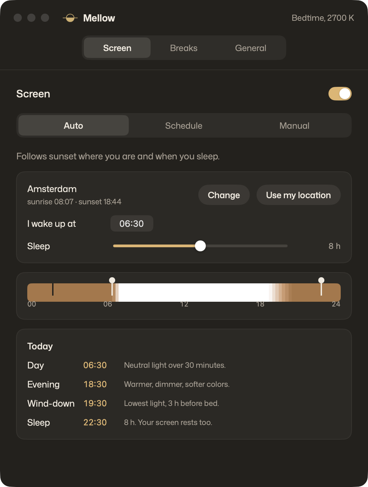
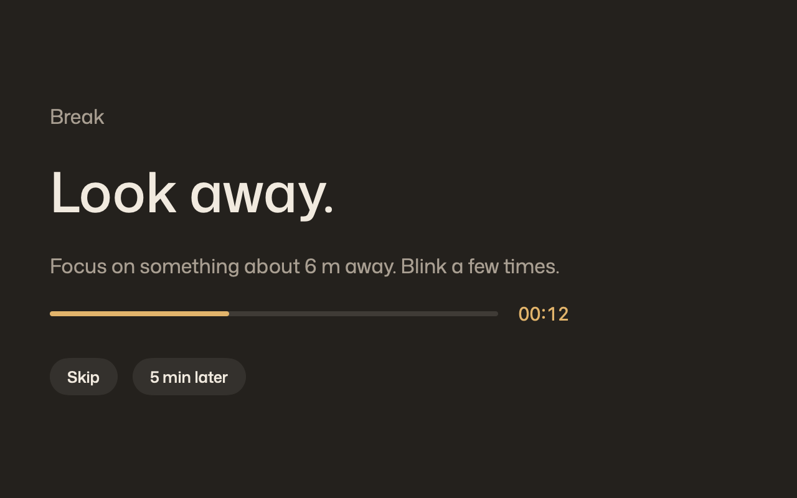

Mellow warms and dims your screen as the evening comes, softens harsh colors and reminds you to look away. For Mac, Windows and Linux.
Left early. The light over the water was worth it.
focus on something ~6 m away. blink a few times.
Choose Daylight, Evening or Bedtime yourself. Or turn on Auto: tell Mellow your city and when you wake up, and it adjusts your screen through the day on its own.

Night Shift only changes the color. Mellow also dims the screen, softens colors and reminds you to take breaks.
Why dimming matters: a study of Night Shift found that changing the color alone may not be enough to reduce the screen's effect on melatonin, the sleep hormone. Brightness matters too.

Warmer colors don't rest your eyes. Looking away does. Every 20 minutes, Mellow covers the screen for 20 seconds. Busy? Skip it or push it back 5 minutes. Your eyes would rather you didn't.
In a 2023 study, two weeks of 20-20-20 break reminders reduced eye strain and dry-eye symptoms.
No trial, no upgrade, no account. Every feature is in the download.
Same plan, same presets on every system.
A menu bar app for macOS 14 or later, Apple Silicon and Intel. The first time, macOS asks you to allow it in System Settings, Privacy & Security.
Download .dmgA tray app for Windows 10 and 11. It isn't signed yet, so SmartScreen may stop it: choose More info, then Run anyway.
Download .exeFor Hyprland, like Omarchy. Uses hyprsunset for warmth and dimming. Settings live in ~/.config/mellow/config.toml.
curl -fLo ~/.local/bin/mellow https://github.com/Inspiractus01/mellow-app/releases/latest/download/mellow
chmod +x ~/.local/bin/mellow
echo 'exec-once = mellow' >> ~/.config/hypr/autostart.conf“After eye surgery, my eyes got tired fast at the computer. Night Shift wasn’t enough, so I built Mellow. It helped me. Maybe it helps you too.”
Tell us what works and what doesn't. Email lowsunlabs@proton.me.